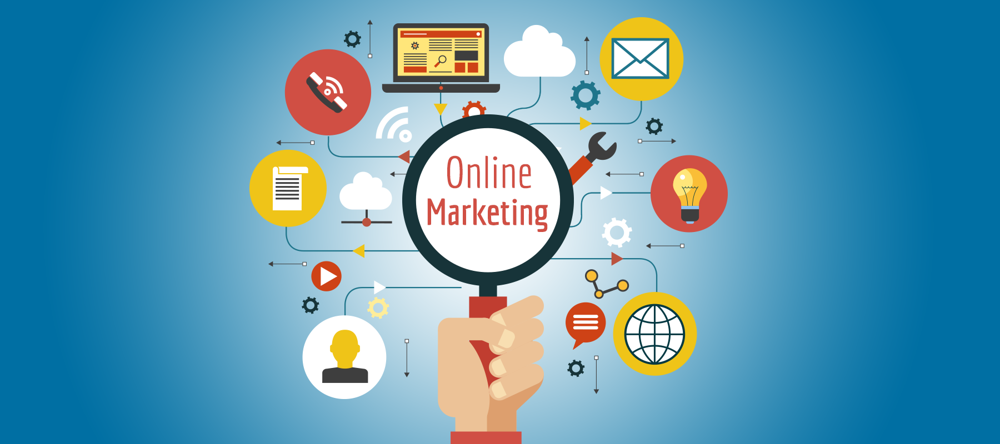
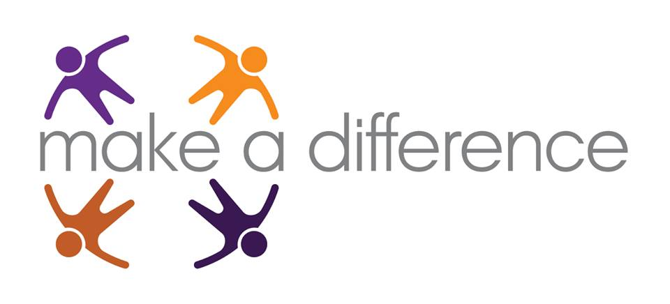
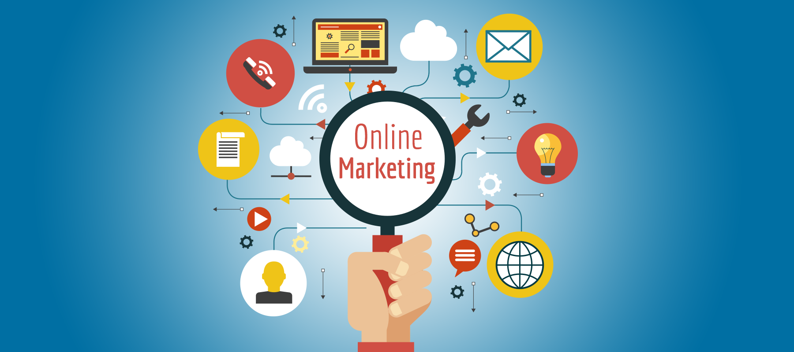
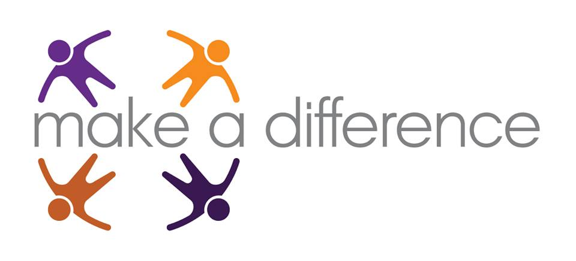

1.)
Here in this Android application development
I have developed the basic applications and I am still working on the advance apps.
The introduction applications on which the work was implemented are:
- Toast Message Application.
- Content Application.
- Weather report Application.
 


